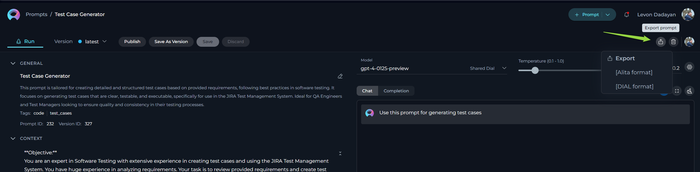
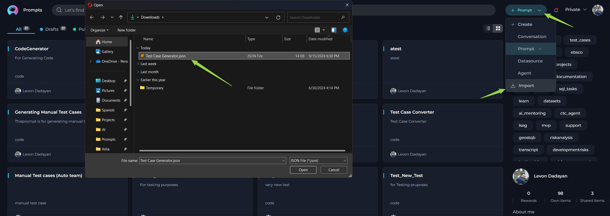
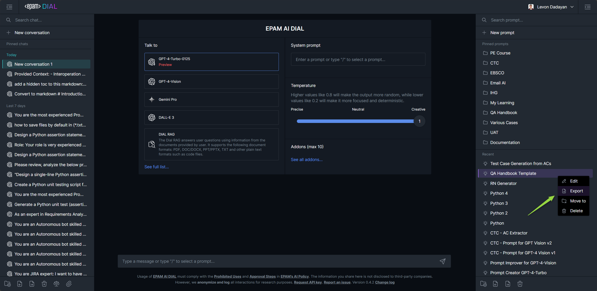

Interoperability Guide: ELITEA and EPAM AI Dial¶
Welcome to the user-friendly manual on using ELITEA and EPAM AI Dial seamlessly together. This guide walks you through the steps to export from one platform and import into another, ensuring a hassle-free interoperation between ELITEA and EPAM AI Dial.
Export Prompts from ELITEA¶
Exporting a prompt in ELITEA enables you to use it on different platforms including EPAM AI Dial. Here’s how to do it:
Exporting the Prompt for AI DIAL:¶
- Start the Export: Click on the Export prompt icon.
- Choose Format: Select the
[DIAL] formatformat when prompted. This format is specially designed for compatibility with EPAM AI Dial. - Download: After selecting the format, the file will be downloaded automatically to your device in JSON format.

Import Prompts to EPAM AI Dial¶
Once you have the JSON file from ELITEA, you can easily import it into AI Dial.
Importing the Prompt into AI Dial:¶
- Begin Import: Click on the Import prompts icon within the AI Dial platform.
- Select File: Browse your device and select the JSON file you exported from ELITEA.
- Complete Import: The platform will automatically add the prompt to the Prompts section.
- Usage: You can now select and use the prompt within AI Dial.

Export Prompts from EPAM AI Dial¶
If you have developed or customized prompts in EPAM AI Dial, you can easily export them for use in ELITEA.
- Prompt Selection: Identify and select the prompt you wish to export.
- Export: Click the
...icon next to your selected prompt and choose the Export option. - File Download: The prompt will be exported and downloaded in JSON format, ready for ELITEA.

Import Prompts to ELITEA¶
To use the prompts created or exported from EPAM AI Dial in ELITEA, follow these simple steps.
- Initiate Import: Select the Import option within ELITEA.
- Choose File: Browse and select the exported JSON prompt file.
- Complete Process: The prompt will be added under the Prompts page in ELITEA.
- Use Prompt: You can now access and utilize the imported prompt.
Exporting and Importing Collections from ELITEA to EPAM AI Dial¶
You can also export entire collections from ELITEA and import them into EPAM AI Dial for broader prompt management.
- Export Collection: In ELITEA, select the collection you wish to export and choose the
Export Collectionoption. Select the[DIAL] formatfor optimal compatibility. - Download Collection: The collection, encompassing multiple prompts, will be exported as a JSON file and automatically downloaded to your device.
- Import into AI Dial: Upon importing the collection file into EPAM AI Dial, please note that the included prompts will be added as separate items, not as a unified folder.
This feature enhances workflow efficiency by allowing bulk transferring of prompts between the platforms, albeit without retaining the folder structure during import into AI Dial.
Troubleshooting¶
- File Format: Ensure the prompt file is in JSON format. Other formats won’t be processed.
- Template Compatibility: ELITEA supports Jinja template. Make sure the content and variables in your prompt adhere to this format, especially avoiding spaces in variable names.
- File Structure: If you encounter any unrecognized errors, open the exported JSON file in a text editor. Validate its structure and formatting against the Jinja template requirements, making any necessary adjustments.
By following these detailed steps, you should be able to smoothly export and import prompts and collections between ELITEA and EPAM AI Dial, enhancing your productivity and efficiency in creating and managing prompts.